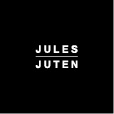

// About me //
Home
About me
Hi there !
Mijn naam is Jules Juten, ik ben een student grafisch en digitale media aan de AP Hogeschool Antwerpen. Welkom op mijn portfolio website in het kader Informatietechnologie 2.